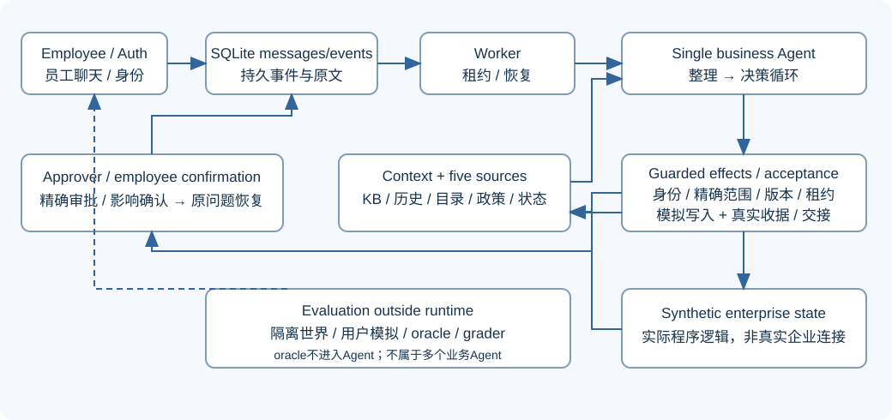

IT Helpdesk Agent 文档入口
根README：安装、账号、运行与边界。以下材料本地阅读，不发布。
继续开发先读开发与测试流程：当前代码职责、校验归属、数据覆盖、按变更选测试、自然交互验收和提升依据。它替代旧的未勾选任务清单，原计划可从 Git 历史查阅。
- 实现状态：当前行为、默认值、费用和限制。
- 真实评测报告：历史版本、实际模式、分子/分母、失败与未测。
- 集成交付证据：新输入真实HTTP/browser smoke、重启、原题逐项映射。
- 七项工程裁定：理由及判断错误代价，与用户确认产品选择分开。
- 系统设计：需求、架构、状态、来源、政策与执行。
- 评估设计：30设计槽位、驱动器、断言、评分和实验口径。
- 答辩与扩展：选择依据与未实现扩展。
- 提示词与契约：实际提议Schema示例、阶段职责和语义局限。

设计文件保留选择理由和扩展条件，当前接口与预算已按代码校对；输入摘录和设计目标不代表已通过成绩。HTML来自Markdown，入口index.html。可选文档工具：pip install markdown-it-py beautifulsoup4，然后从仓库根执行python docs/_tools/render_docs.py。原题见候选题目。